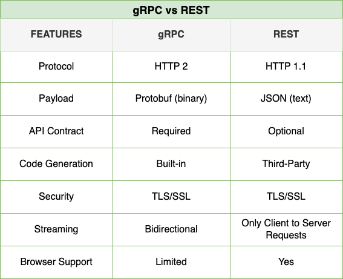
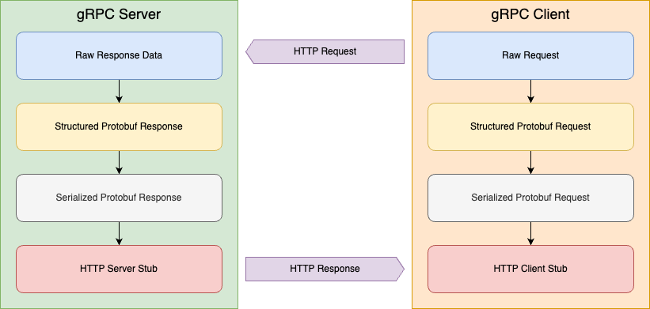

13
Working with gRPC
gRPC, a robust framework, has emerged as a powerful tool for building fast, efficient, and scalable communication between services. Its efficiency, surpassing that of traditional REST APIs, is due to its use of HTTP/2 and Protocol Buffers (Protobuf), which enable features like bidirectional streaming, multiplexing, and compact message serialization. These attributes make gRPC intriguing for scenarios demanding low latency and high throughput, such as real-time data streaming, microservices, and mobile-to-backend communication.
With .NET 8, gRPC has become a first-class citizen in the .NET ecosystem, providing robust support for creating gRPC services and clients. Whether building APIs for internal microservices or delivering real-time updates to thousands of connected devices, gRPC enables you to write strongly typed, efficient code while taking advantage of modern networking capabilities. Its seamless integration with C# ensures a reassuring and confident development experience, with generated classes and intuitive APIs handling much of the heavy lifting for you.
This chapter will explore the essentials of working with gRPC in .NET, from understanding its architecture to implementing services and clients. We’ll also dive into advanced features like streaming, load balancing, and security, demonstrating how to harness gRPC’s full potential in your applications. By the end, you’ll be equipped to leverage gRPC for building high-performance, real-world systems with inspiration and motivation. Let’s dive in and uncover what makes gRPC a game-changer for network programming in C#.
Introduction to gRPC and Its Role in Modern Applications
gRPC’s role in modern application architectures is not limited to microservices. It is a versatile tool that finds applications in diverse areas such as IoT communication, real-time analytics, backend-to-backend APIs, and even mobile-to-server interactions. Its cross-platform nature and multi-language support ensure seamless communication, regardless of the technology stack, instilling confidence in its applicability to a wide range of use cases.
gRPC's design philosophy is centered around interoperability, offering official support for multiple programming languages, including C#, Java, Python, and Go. This multi-language support allows developers to build systems where services written in different languages can communicate seamlessly. GRPC's platform-agnostic nature, combined with Protobuf-generated code, simplifies development by eliminating manual serialization and deserialization, reducing errors and speeding up the development process. This flexibility reassures developers that gRPC can adapt to their specific needs.
This section will explore how gRPC fits into today’s software ecosystem and why it has become a go-to solution for building high-performance networked applications. By understanding its core features and unique strengths, such as its ability to reduce network latency and improve data transfer efficiency, you’ll gain insight into how gRPC can elevate your development practices and significantly improve the efficiency of your systems.
Comparison to REST and Other Protocols
Comparing gRPC to REST and other communication protocols highlights its strengths in scenarios requiring high performance, low latency, and modern features. REST, one of the most widely used protocols, operates over HTTP and typically uses JSON for data exchange. At the same time, REST’s simplicity and universality have made it a standard for web APIs. Its reliance on text-based serialization, lack of native streaming, and statelessness can introduce inefficiencies, especially in resource-constrained or high-demand environments.

gRPC efficiently overcomes these limitations with a binary serialization format (Protobuf) that is significantly more compact and faster to process than JSON. This leads to reduced payload sizes, faster serialization and deserialization, and overall lower network overhead. Furthermore, gRPC’s use of HTTP/2 enables advanced features like multiplexing, where multiple streams can share a single connection, and full-duplex communication, allowing clients and servers to send data simultaneously. These features are highly efficient in real-time applications like live data streaming or bidirectional messaging..
Another critical advantage of gRPC is its built-in support for strongly typed contracts, defined in .proto files. This ensures consistency between clients and servers, as the Protobuf definitions are used to generate language-specific classes. In contrast, REST APIs often rely on ad-hoc documentation or tools like Swagger/OpenAPI to define contracts, which can introduce ambiguity and require manual updates. gRPC’s approach, on the other hand, reduces errors and accelerates development by automating the generation of code that strictly adheres to the service definition, relieving developers from manual tasks.
While gRPC outperforms REST in many technical dimensions, it is not a universal replacement. REST remains a strong choice for public-facing APIs due to its simplicity, compatibility with web technologies, and human-readable payloads. Similarly, protocols like WebSockets or GraphQL excel in specific domains such as event-driven applications or flexible querying. Using gRPC, REST, or another protocol or framework should align with the application’s requirements, factoring in performance needs, developer experience, and ecosystem compatibility. Understanding these trade-offs is crucial as it empowers you to select the most effective communication protocol or framework for your .NET applications.
Common Use Cases for gRPC
gRPC excels in scenarios where high performance, low latency, and efficient communication are critical. One of its most prominent use cases is microservices architecture, where services must communicate frequently and quickly exchange data. In this context, gRPC's compact serialization format and HTTP/2 features make it ideal for service-to-service communication, reducing overhead and improving throughput. The strongly typed contracts provided by Protobuf ensure consistency across services, even in polyglot environments, enabling teams to work more efficiently and with fewer integration issues.
Another common use case for gRPC is real-time data streaming. Applications such as live sports updates, financial market feeds, and IoT telemetry require continuous, bidirectional data exchange between clients and servers. gRPC's support for streaming RPCs—whether server-side, client-side, or bidirectional—ensures a seamless implementation of these scenarios. Unlike REST, which would require cumbersome workarounds like long polling or server-sent events, gRPC handles streaming natively, providing a more elegant and efficient solution.
Mobile and edge computing applications also benefit from gRPC's lightweight and efficient communication. With its reduced payload sizes and ability to work over constrained networks, gRPC is well-suited for mobile apps communicating with backend services or edge devices exchanging data with centralized systems. These capabilities make gRPC a powerful tool, inspiring the creation of responsive, scalable, and resource-efficient systems across many modern application domains.
How gRPC Fits in Modern Application Architectures
gRPC is a robust solution that plays a pivotal role in modern application architectures. It effectively addresses the challenges of efficient, reliable communication in distributed systems, particularly in microservices-based architectures. In scenarios where services often need to interact with each other in low-latency, high-throughput situations, gRPC's use of HTTP/2 and Protobuf provides performance benefits, such as reduced payload sizes, multiplexing, and bidirectional streaming. These features are essential for maintaining scalability and responsiveness in complex systems.
Beyond microservices, gRPC seamlessly integrates into cloud-native ecosystems. Its service discovery, which allows services to find and communicate with each other without hard-coding their locations, and load balancing support, which distributes incoming network traffic across a group of backend servers, align well with container orchestration platforms like Kubernetes. By using gRPC with tools such as Envoy or Istio, developers can implement advanced networking features like retries, circuit breaking, and traffic shaping, all while maintaining efficient communication between services. This makes gRPC a natural fit for building resilient, scalable applications in cloud environments.
gRPC is a highly efficient tool that enhances client-server interactions in edge computing, IoT, and mobile applications. Its efficient serialization and transport mechanisms make it ideal for devices operating in constrained environments or on unreliable networks. Additionally, gRPC's strongly typed contracts and cross-language support ensure that systems composed of diverse technologies can communicate seamlessly. As modern applications increasingly rely on distributed, real-time systems, gRPC's efficiency has made it a cornerstone for enabling robust and efficient communication across the architecture, providing practical benefits to developers and architects.
Understanding gRPC Architecture and Protocols
Understanding its architecture and underlying protocols is crucial to fully leveraging gRPC's power. At its core, gRPC is a RPC framework designed for high-performance communication. It operates on a client-server model, where clients call methods on remote servers as if they were local. This abstraction is achieved through strongly typed service definitions, enabled by Protobuf. Protobuf, a language-agnostic data serialization format, handles message serialization and deserialization seamlessly, providing efficient and compact data transfer.

gRPC's architecture is tightly coupled with HTTP/2, a modern transport protocol with multiplexing, bidirectional streaming, and header compression features. Unlike the stateless nature of traditional HTTP/1.1, HTTP/2 allows for persistent connections, enabling multiple streams to operate concurrently without the overhead of opening new connections. This design significantly reduces latency and improves throughput, making gRPC well-suited for real-time data exchange scenarios and low-latency interactions. For example, in a stock trading application, gRPC's bidirectional streaming can be used to continuously update stock prices for multiple users in real time.
Another defining aspect of gRPC is its adaptability in communication patterns. It supports four types of RPCs—unary (one request, one response), server streaming (one request, multiple responses), client streaming (multiple requests, one response), and bidirectional streaming (multiple requests and responses). These patterns allow gRPC to adapt to various application needs, from simple request-response APIs to complex, real-time communication workflows, providing reassurance in its versatility.
By combining Protobuf's compact serialization, HTTP/2's advanced transport capabilities, and flexible communication patterns, gRPC provides a robust framework for building efficient, scalable, and maintainable applications. In the following sections, we'll delve deeper into these architectural components, exploring how they work together to deliver the performance and versatility that have made gRPC a cornerstone of modern network programming.
Core Concepts of gRPC
At the heart of gRPC are several core concepts that define its architecture and enable its high-performance communication capabilities. One fundamental concept is the RPC paradigm, which gRPC not only utilizes but also modernizes for today's distributed systems. In this model, a client application can directly invoke methods on a server application as if it were a local object, simplifying the development of networked services. This abstraction hides the complexities of the underlying network communication, allowing developers to focus on application logic rather than low-level protocol details.
Another core concept is the use of Protobuf as the interface definition language and message serialization mechanism. Protobuf allows developers to define service contracts and message structures in a language-agnostic .proto file. These definitions are then used to generate strongly typed code for clients and servers in multiple programming languages, including C#. This approach ensures type safety, reduces errors, and accelerates development by automating the creation of data access classes and service stubs based on a consistent contract, providing a robust foundation for gRPC.
gRPC's architecture is also deeply integrated with HTTP/2, a protocol that provides advanced transport features essential for modern applications. HTTP/2 enables multiplexing of multiple streams over a single TCP connection, reducing latency and improving resource utilization. This means that gRPC can handle multiple requests and responses at the same time, making it more efficient than traditional HTTP/1.1. It also supports full-duplex communication, allowing clients and servers to send and receive data simultaneously. This capability is crucial for gRPC's support of various communication patterns, such as unary calls, server streaming, client streaming, and bidirectional streaming. These core concepts empower gRPC to deliver efficient, scalable, and robust communication in distributed systems.
Extensibility and Interoperability
One of gRPC’s greatest strengths lies in its extensibility and interoperability, making it a versatile framework for building distributed systems. At its core, gRPC is designed to work seamlessly across multiple programming languages and platforms, ensuring efficient communication between diverse components of a system, regardless of their underlying implementation. Using Protobuf to define service contracts, gRPC enables developers to generate strongly typed client and server code in C#, Java, Python, and Go, further boosting its efficiency and versatility.
Extensibility in gRPC is achieved through features like interceptors and custom metadata. Interceptors allow developers to implement cross-cutting concerns such as logging, monitoring, and authentication without modifying core service logic, enhancing the adaptability of gRPC to the unique needs of complex applications. On the other hand, custom metadata provides a flexible way to attach additional information to requests and responses, enabling advanced use cases like tracking, debugging, or custom authorization schemes. These features make gRPC highly adaptable and reassuringly flexible.
Interoperability is further enhanced by gRPC’s compatibility with HTTP/2 and support for gRPC-Web. While native gRPC relies on HTTP/2, gRPC-Web extends its reach to environments like browsers that do not fully support HTTP/2. This makes gRPC ideal for integrating modern front-end applications with back-end services. Together, these capabilities ensure that gRPC is not just a high-performance framework, but also a future-proof solution for building scalable, language-agnostic systems in .NET and beyond, providing a sense of security about its longevity.
Setting Up a gRPC Service in .NET
Setting up a gRPC service in .NET is the first step toward building efficient, high-performance communication systems for modern applications. Unlike traditional REST APIs, gRPC services are defined using Protobuf, a single source of truth for the service contract and the data structures exchanged between clients and servers. This definition-driven approach ensures strong typing, consistency, and compatibility across diverse platforms and languages, opening up a world of possibilities for your applications.
.NET provides robust support for gRPC out of the box, making creating, configuring, and deploying gRPC services straightforwardly. By leveraging the ASP.NET Core framework, developers can host gRPC services with features like built-in dependency injection, middleware pipelines, and seamless integration with HTTP/2. The tooling in .NET, including support for generating service stubs and client proxies directly from .proto files, further accelerates the development process and minimizes boilerplate code.
This section will walk us through the steps to set up a gRPC service in a .NET application. From defining the service contract with Protobuf to implementing service logic and configuring the server environment, you’ll gain a deep and comprehensive understanding of how to create scalable and maintainable gRPC solutions. Let’s dive into the practical aspects of building your first gRPC service in .NET.
Creating a gRPC Project in .NET
Creating a gRPC project in .NET is straightforward, thanks to the powerful tooling and templates provided by the framework. Whether using Visual Studio, Visual Studio Code, or the .NET CLI, the process is designed to get you up and running quickly with a robust gRPC service. This section will explore how to effortlessly set up a project using the .NET CLI and implement a basic gRPC service.
Start by creating a new gRPC project using the .NET CLI:
dotnet new grpc -n GrpcExampleThis command generates a new gRPC project named GrpcExample. Navigate to the project directory, and you’ll find a pre-configured structure with all the necessary files, including the Protos folder containing a default .proto file. This file defines a sample gRPC service that is ready for customization, which includes modifying the service methods, data types, and error handling. Open Protos/greet.proto to explore its content:
syntax = "proto3";
option csharp_namespace = "GrpcExample";
service Greeter {
rpc SayHello (HelloRequest) returns (HelloReply);
}
message HelloRequest {
string name = 1;
}
message HelloReply {
string message = 1;
}This Protobuf definition specifies a service named Greeter with a single method, SayHello. The method accepts a HelloRequest message containing a name field and returns a HelloReply message with a message field.
Next, restore the dependencies and build the project to generate the necessary C# code from the .proto file:
dotnet buildThe build process generates service stubs and message classes in C#, allowing you to implement the logic for the SayHello method. Open the Services/GreeterService.cs file, which contains the generated service base class. Customize the implementation as follows:
public class GreeterService : Greeter.GreeterBase
{
public override Task<HelloReply> SayHello(HelloRequest request, ServerCallContext context)
{
return Task.FromResult(new HelloReply
{
Message = $"Hello, {request.Name}!"
});
}
}This implementation returns a greeting message based on the name provided in the request. As needed, you can expand this logic to include more complex processing.
Finally, configure the gRPC service in Program.cs to ensure it runs on the appropriate server setup:
var builder = WebApplication.CreateBuilder(args);
builder.Services.AddGrpc();
var app = builder.Build();
app.MapGrpcService<GreeterService>();
app.MapGet("/", () => "Use a gRPC client to connect.");
app.Run();Run the application with dotnet run, and your gRPC service will be accessible via HTTP/2. To test the service, use a gRPC client like grpcurl (https://github.com/fullstorydev/grpcurl) or implement a client in .NET. This foundational setup paves the way for building more advanced gRPC services and integrating them into your application. The following steps will explore implementing additional methods, securing the service, and creating clients.
Defining the Service Contract with Protobuf
Protocol Buffers, or Protobuf, is the foundation of gRPC's efficiency and flexibility, serving as its interface definition language (IDL) and serialization mechanism. Protobuf allows developers to define service contracts and message structures in a compact .proto file, which is the blueprint for client-server communication. This file defines RPC methods, their request and response messages, and any additional metadata, ensuring a consistent, strongly typed interface across multiple platforms and languages.
One of Protobuf's key strengths lies in its highly efficient serialization. Protobuf encodes data into a compact binary format, unlike text-based formats such as JSON or XML, significantly reducing payload sizes and processing overhead. This reduction in payload sizes, which can be substantial, makes it particularly well-suited for scenarios with high data throughput or constrained network bandwidth. For example, a structured JSON message of several kilobytes can be reduced to a fraction of its size using Protobuf without sacrificing the integrity or detail of the information, showcasing the efficiency of Protobuf.
The .proto file ensures consistency and accelerates development by automatically generating code for client and server implementations. In .NET, tools like dotnet-grpc generate strongly typed C# classes and methods from the .proto definitions, simplifying integration and reducing the risk of errors. This seamless generation and enforcement of type safety, facilitated by Protobuf, provides a powerful framework for building robust gRPC applications. By leveraging Protobuf, gRPC not only ensures that communication between components always adheres to the defined contract but also balances performance, reliability, and developer productivity, making it a standout choice for modern distributed systems.
To define a service contract, create a .proto file in the Protos directory of your gRPC project. For example, consider a service for managing a to-do list, which allows users to create, update, and delete tasks. The .proto file might look like this:
syntax = "proto3";
option csharp_namespace = "TodoApp";
service TodoService {
rpc AddTodo (TodoRequest) returns (TodoReply);
rpc GetTodos (Empty) returns (stream TodoItem);
}
message TodoRequest {
string title = 1;
string description = 2;
}
message TodoReply {
string status = 1;
}
message TodoItem {
string title = 1;
string description = 2;
string status = 3;
}
message Empty {}This definition includes a TodoService with two RPC methods: AddTodo, which accepts a TodoRequest and returns a TodoReply, and GetTodos, which streams a list of TodoItem objects. Protobuf, with its support for various data types, including strings, integers, and booleans, empowers you to define complex messages with flexibility and ease.
Once the .proto file is defined, the .NET tooling takes over, automatically compiling .proto files during the build process and creating classes for messages and a base class for the service. Ensure the .proto file is included in your project and specify the correct build action in your .csproj file:
<ItemGroup>
<Protobuf Include="Protos\todo.proto" />
</ItemGroup>Build the project with dotnet build to generate the necessary classes. The generated code will include classes for each message (e.g., TodoRequest, TodoReply, TodoItem) and a base service class (e.g., TodoService.TodoServiceBase). These classes provide a strongly typed foundation for implementing and consuming the gRPC service.
For example, to implement the AddTodo method, override it in a derived service class:
public class TodoServiceImpl : TodoService.TodoServiceBase
{
private readonly List<TodoItem> _todos = new();
public override Task<TodoReply> AddTodo(TodoRequest request, ServerCallContext context)
{
var todo = new TodoItem
{
Title = request.Title,
Description = request.Description,
Status = "Pending"
};
_todos.Add(todo);
return Task.FromResult(new TodoReply { Status = "Added" });
}
public override async Task GetTodos(Empty request, IServerStreamWriter<TodoItem> responseStream, ServerCallContext context)
{
foreach (var todo in _todos)
{
await responseStream.WriteAsync(todo);
}
}
}This implementation handles adding to-do items and streaming them back to clients. The term' streaming' here refers to the process of sending a continuous flow of data from the server to the client, or vice versa, rather than a single, one-time transfer. The Protobuf definitions ensure consistent serialization and deserialization of data, while the generated base classes simplify service development. Defining the service contract early in the process sets a strong foundation for building and evolving your gRPC services. Subsequent sections will explore how to host and consume these services efficiently in .NET.
Running the gRPC Service
Once your gRPC service is implemented and the server configured, running the service is straightforward. Use the dotnet run command to start the application. The server will begin listening for incoming gRPC requests on the specified port if everything is set up correctly.
By default, ASP.NET Core provides a console output indicating that the application is running and the URL where the service is accessible. If you’ve configured HTTP/2 with HTTPS, the output might look like this:
info: Microsoft.Hosting.Lifetime[14]
Now listening on: https://localhost:5001
info: Microsoft.Hosting.Lifetime[14]
Now listening on: http://localhost:5000
info: Microsoft.Hosting.Lifetime[0]
Application started. Press Ctrl+C to shut down.To verify that your service is running, you can use tools like grpcurl to send requests to your gRPC endpoint. For instance, if you’ve implemented the TodoService, you could test the AddTodo method as follows:
grpcurl -plaintext -d '{"title":"Buy groceries","description":"Pick up milk and bread"}' localhost:5001 TodoService/AddTodoThis sends a request to the AddTodo method, which is responsible for adding a new todo item, and returns the server’s response, confirming that the service is operational.
Running your gRPC service is more than just starting the server; it’s also about validating that the endpoints function as expected. During development, consider using tools like Postman (with gRPC support) or integrating automated tests to ensure reliability. With the service successfully running, the next step is to build clients that interact with it, enabling real-world applications to consume the functionality you’ve created, thereby demonstrating the real-world applicability and impact of your work.
Creating a gRPC Client in .NET
Creating a client is a straightforward and essential part of working with gRPC. It enables applications to consume the services hosted on a gRPC server. In .NET, gRPC clients are strongly typed and generated directly from the .proto service definition, ensuring that the client and server adhere to the same contract. This tight coupling simplifies development, eliminates potential mismatches, and provides a seamless developer experience.
In this section, we’ll explore how to create and configure a gRPC client in .NET, from generating client code to establishing a connection with the server. We’ll also delve into advanced topics, such as securing communication with Transport Layer Security (TLS), a crucial aspect of gRPC applications. Understanding this will ensure that your applications are secure. We'll also cover handling custom headers, and managing client-side streaming. These concepts will prepare you to build robust and efficient applications that interact seamlessly with gRPC services.
By the end of this section, you’ll understand how to integrate gRPC clients into your .NET solutions. Whether you’re building a console application, a web client, or an IoT device, the tools and techniques covered here will empower you to leverage the full potential of gRPC in your applications. Let’s dive into the practical steps of setting up your first gRPC client.
Understanding the gRPC Client Workflow
The gRPC client workflow in .NET revolves around simplicity and efficiency, leveraging the strongly typed client classes generated from the .proto file. These classes act as the entry point for interacting with the gRPC server, encapsulating the logic for making RPC calls and managing network communication. By abstracting the complexity of serialization, deserialization, and transport, gRPC clients enable developers to focus on implementing business logic without worrying about low-level details.
The process begins with the client establishing a channel to the server. A channel in gRPC represents a connection to a specific server address and serves as the foundation for making remote calls. Once the channel is established, a client object is instantiated using the generated client class. This client object provides methods corresponding to the RPCs defined in the service contract, allowing you to invoke them just as you would call a local method. For example, making a unary RPC involves passing the request message to the client using the client method and awaiting the server’s response.
The client workflow integrates seamlessly with async programming patterns in C# for more complex interactions, such as streaming. Server streaming, client streaming, and bidirectional streaming all utilize IAsyncStreamReader and IAsyncStreamWriter interfaces to handle continuous data flows efficiently. Throughout this process, the gRPC client ensures that the communication adheres to the contract defined in the .proto file, providing a consistent and reliable way to interact with gRPC services. With this foundation, you are ready to implement gRPC clients in .NET applications, tapping into the full potential of this robust communication framework.
Generating Client Code from Protobuf
Generating client code from Protobuf is critical in setting up a gRPC client in .NET. The .proto file is the single source of truth for service definitions and message structures. The dotnet-grpc tool or build-time Protobuf compilation, which are key in this process, allow you to generate strongly typed C# classes that encapsulate the communication logic for interacting with the server. These generated classes save you from manually writing serialization, deserialization, or network code, ensuring consistency with the server-side implementation.
Start by adding the .proto file to your client project. For example, suppose the todo.proto file from the server, which contains the following service definition, is added to your client project:
syntax = "proto3";
option csharp_namespace = "TodoApp";
service TodoService {
rpc AddTodo (TodoRequest) returns (TodoReply);
rpc GetTodos (Empty) returns (stream TodoItem);
}
message TodoRequest {
string title = 1;
string description = 2;
}
message TodoReply {
string status = 1;
}
message TodoItem {
string title = 1;
string description = 2;
string status = 3;
}
message Empty {}To include this file in your client project, add it to the project’s Protos directory and update the .csproj file with the following:
<ItemGroup>
<Protobuf Include="Protos\todo.proto" GrpcServices="Client" />
</ItemGroup>The GrpcServices="Client" attribute ensures only client code is generated, avoiding unnecessary server-side code. When you build the project, the Protobuf compiler generates classes like TodoService.TodoServiceClient, TodoRequest, and TodoReply.
Run dotnet build to compile the project and generate the client code. The generated classes, such as the TodoServiceClient, are designed for your ease of use when interacting with the server. For example, the TodoServiceClient class provides methods that match the service's RPCs, such as AddTodoAsync and GetTodos. These methods handle communication details transparently, allowing you to focus on application logic:
var channel = GrpcChannel.ForAddress("https://localhost:5001");
var client = new TodoService.TodoServiceClient(channel);
var reply = await client.AddTodoAsync(new TodoRequest
{
Title = "Complete Task",
Description = "Work on the gRPC client code"
});
Console.WriteLine($"Response: {reply.Status}");The generated client simplifies interaction with the server, encapsulating serialization, deserialization, and HTTP/2 communication. This process is repeated for each .proto file if your project includes multiple services. By automating client generation, gRPC ensures consistency, improves development speed, and most importantly, reduces the chances of errors. With the client code ready, you can implement robust and efficient interactions with your gRPC services, knowing that the system is reliable.
Setting Up the gRPC Client in .NET
Setting up the client for a gRPC service in .NET is straightforward and efficient. It involves establishing a connection with the server, creating a client instance, and configuring communication options. The generated client classes from the Protobuf definitions simplify these steps, allowing you to integrate gRPC into your application quickly and with a sense of productivity.
The first step is to create a GrpcChannel, which serves as the communication link between the client and the server. The channel specifies the server’s address and optionally configures features like transport security. Creating a channel for a gRPC server running locally with HTTPS is a straightforward process that you can confidently handle.
using Grpc.Net.Client;
var channel = GrpcChannel.ForAddress("https://localhost:5001");Once the channel is established, instantiate the client using the generated client class. For example, if you have a TodoService defined in your .proto file, its corresponding client class is TodoServiceClient:
var client = new TodoService.TodoServiceClient(channel);With the client set up, you can start invoking RPC methods. For unary calls, the client exposes asynchronous methods like AddTodoAsync, which return Task objects. For example:
var reply = await client.AddTodoAsync(new TodoRequest
{
Title = "Write gRPC Client Setup",
Description = "Document how to configure a gRPC client in .NET"
});
Console.WriteLine($"Response: {reply.Status}");For streaming RPCs, the client provides methods to handle streams of data. For instance, if the service supports server streaming, you can read responses using asynchronous enumerables:
using var call = client.GetTodos(new Empty());
await foreach (var todo in call.ResponseStream.ReadAllAsync())
{
Console.WriteLine($"Title: {todo.Title}, Description: {todo.Description}");
}To enhance communication, you can configure the client with additional options, such as headers for authentication or metadata. Use the CallOptions parameter when invoking RPC methods:
var headers = new Metadata
{
{ "Authorization", "Bearer YOUR_TOKEN" }
};
var callOptions = new CallOptions(headers);
var replyWithAuth = await client.AddTodoAsync(new TodoRequest
{
Title = "Authenticated Request",
Description = "Include headers in the gRPC request"
}, callOptions);
Console.WriteLine($"Authenticated Response: {replyWithAuth.Status}");Setting up a gRPC client in .NET establishes the foundation for consuming gRPC services and opens up customization opportunities. With the client now configured and ready, you are fully prepared to move forward to more advanced scenarios, such as error handling, retries, and performance optimization, to ensure your application's robust and reliable communication layer.
Error Handling and Retries
As developers, your role in handling errors and retries is integral to building resilient gRPC applications. gRPC uses status codes to communicate errors between clients and servers, providing you with detailed information about what went wrong. These status codes, such as OK, INVALID_ARGUMENT, and UNAVAILABLE, allow you to distinguish between recoverable and unrecoverable errors, enabling appropriate actions like logging, retrying, or escalating the issue.
To handle errors in .NET, catch exceptions of type RpcException, which encapsulates the status code and additional metadata. This metadata can provide further context about the error, such as the method that was called or the arguments that were passed, enhancing the error handling process. For instance, consider invoking a unary RPC method and handling potential errors:
try
{
var reply = await client.AddTodoAsync(new TodoRequest
{
Title = "Handle Errors",
Description = "Write error handling section for gRPC chapter"
});
Console.WriteLine($"Response: {reply.Status}");
}
catch (RpcException ex)
{
Console.WriteLine($"gRPC Error: {ex.Status.StatusCode} - {ex.Message}");
if (ex.StatusCode == StatusCode.Unavailable)
{
Console.WriteLine("The server is unavailable. Please retry later.");
}
}This approach not only ensures that your application handles issues like server unavailability or invalid inputs gracefully, but also provides a robust solution that you can rely on.
Retries are particularly important for transient errors like network interruptions or server overload. gRPC supports automatic retries through the ServiceConfig feature, which can be configured in your client setup. To add a retry policy to your client channel, you can do the following:
var serviceConfig = new ServiceConfig
{
MethodConfigs =
{
new MethodConfig
{
Names = { MethodName.Default },
RetryPolicy = new RetryPolicy
{
MaxAttempts = 5,
InitialBackoff = TimeSpan.FromMilliseconds(100),
MaxBackoff = TimeSpan.FromSeconds(2),
BackoffMultiplier = 1.5,
RetryableStatusCodes = { StatusCode.Unavailable, StatusCode.DeadlineExceeded }
}
}
}
};
var channel = GrpcChannel.ForAddress("https://localhost:5001", new GrpcChannelOptions
{
ServiceConfig = serviceConfig
});
var client = new TodoService.TodoServiceClient(channel);This configuration enables automatic retries for specific status codes, such as UNAVAILABLE or DEADLINE_EXCEEDED, with exponential backoff to avoid overwhelming the server.
You can combine retries with deadlines for advanced scenarios to ensure operations do not hang indefinitely. Use the CallOptions object to set a deadline for a method call:
try
{
var deadline = DateTime.UtcNow.AddSeconds(5);
var reply = await client.AddTodoAsync(new TodoRequest
{
Title = "Test Deadlines",
Description = "Ensure timeout is handled"
}, new CallOptions(deadline: deadline));
Console.WriteLine($"Response: {reply.Status}");
}
catch (RpcException ex) when (ex.StatusCode == StatusCode.DeadlineExceeded)
{
Console.WriteLine("Request timed out. Please try again later.");
}Combining error handling, retries, and deadlines allows you to build robust gRPC clients that gracefully handle failure scenarios while maintaining a responsive user experience. These practices are essential for creating reliable applications in distributed environments.
Advanced gRPC Features and Patterns
gRPC empowers developers with a rich array of advanced features and patterns, enabling them to craft highly efficient, flexible, and scalable systems. These features transcend basic RPC calls, facilitating real-time communication, load balancing, and observability. Mastering these advanced capabilities equips you to effortlessly design robust distributed systems that can handle even the most intricate requirements.
One of the most practical and powerful advanced features in gRPC is bidirectional streaming. Unlike traditional request-response models, bidirectional streaming allows clients and servers to exchange data streams simultaneously. This pattern is not just a theoretical concept, but a practical tool for real-time applications like chat systems, telemetry reporting, or collaborative tools requiring continuous two-way communication. By combining bidirectional streaming with .NET’s async and LINQ capabilities, you can implement these scenarios with clean, expressive code.
gRPC seamlessly integrates with modern service mesh technologies like Envoy and Istio, making it a natural fit in your tech stack. This integration enables advanced networking patterns such as traffic shaping, retries, and circuit breaking. Additionally, gRPC’s extensibility allows you to add custom interceptors for logging, authentication, or metrics collection, enhancing observability and security. These patterns improve application reliability and ensure maintainability and scalability, making gRPC a cornerstone for high-performance, cloud-native architectures.
Streaming in gRPC: Server, Client, and Bidirectional
Streaming, a standout feature of gRPC, is the gateway to real-time data transfer between clients and servers. Unlike unary calls, which are confined to a single request and response, streaming introduces more dynamic communication patterns: server, client, and bidirectional. These patterns foster real-time interactions, high-throughput data processing, and more efficient use of network resources.
Server streaming, a key feature of gRPC, is particularly beneficial in scenarios where the client needs to receive a continuous stream of responses from the server after sending a single request. This is especially useful for real-time dashboards or continuous data feeds, where the client can stay updated with the latest information without the need for repeated requests. For instance, imagine a method that streams updates for a list of tasks:
public override async Task GetTodos(Empty request, IServerStreamWriter<TodoItem> responseStream, ServerCallContext context)
{
foreach (var todo in _todos)
{
await responseStream.WriteAsync(todo);
}
}To consume this stream, the client iterates over the server’s responses asynchronously:
using var call = client.GetTodos(new Empty());
await foreach (var todo in call.ResponseStream.ReadAllAsync())
{
Console.WriteLine($"Task: {todo.Title} - {todo.Status}");
}Client streaming flips this model, allowing the client to send a stream of requests to the server while the server responds once, typically after processing all the client data. This is ideal for batch uploads or aggregation tasks. Here’s how you might implement it on the server:
public override async Task<TodoSummary> AddTodos(IAsyncStreamReader<TodoRequest> requestStream, ServerCallContext context)
{
int count = 0;
await foreach (var request in requestStream.ReadAllAsync())
{
_todos.Add(new TodoItem { Title = request.Title, Description = request.Description, Status = "Pending" });
count++;
}
return new TodoSummary { TotalTodos = count };
}On the client side, you write to the request stream and await the server’s response:
using var call = client.AddTodos();
foreach (var todo in todosToAdd)
{
await call.RequestStream.WriteAsync(new TodoRequest { Title = todo.Title, Description = todo.Description });
}
await call.RequestStream.CompleteAsync();
var summary = await call.ResponseAsync;
Console.WriteLine($"Added {summary.TotalTodos} tasks.");Bidirectional streaming combines both models, allowing the client and server to send and receive streams simultaneously. This pattern is invaluable for real-time collaboration or interactive systems like chat applications. On the server, handle both streams concurrently:
public override async Task Chat(IAsyncStreamReader<ChatMessage> requestStream, IServerStreamWriter<ChatMessage> responseStream, ServerCallContext context)
{
await foreach (var message in requestStream.ReadAllAsync())
{
Console.WriteLine($"Received: {message.Content}");
await responseStream.WriteAsync(new ChatMessage { Content = $"Echo: {message.Content}" });
}
}On the client, manage both streams to handle the dynamic flow of data:
using var call = client.Chat();
var responseTask = Task.Run(async () =>
{
await foreach (var response in call.ResponseStream.ReadAllAsync())
{
Console.WriteLine($"Server: {response.Content}");
}
});
await foreach (var message in GetChatMessagesAsync())
{
await call.RequestStream.WriteAsync(new ChatMessage { Content = message });
}
await call.RequestStream.CompleteAsync();
await responseTask;Streaming in gRPC adds a powerful dimension to client-server communication. By using these patterns effectively, you can build systems that handle large volumes of data, operate in real-time, and provide seamless interactivity while maintaining the efficiency and reliability of gRPC’s framework.
Interceptors for Cross-Cutting Concerns
Interceptors in gRPC provide a powerful mechanism to handle cross-cutting concerns, such as logging, authentication, and metrics, without cluttering your core service logic. They operate at the framework level, intercepting requests and responses as they pass through the gRPC pipeline. This enables you to implement reusable, centralized functionality that applies to all or specific gRPC methods, giving you the power to control where and how your interceptors are applied.
In .NET, creating an interceptor involves subclassing either Interceptor for general-purpose logic, which can be applied to both server and client, or ServerInterceptor/ClientInterceptor for logic specific to the server or client. For example, here’s how you could implement a server-side interceptor to log all incoming requests:
public class LoggingInterceptor : Interceptor
{
private readonly ILogger<LoggingInterceptor> _logger;
public LoggingInterceptor(ILogger<LoggingInterceptor> logger)
{
_logger = logger;
}
public override async Task<TResponse> UnaryServerHandler<TRequest, TResponse>(
TRequest request,
ServerCallContext context,
UnaryServerMethod<TRequest, TResponse> continuation)
{
_logger.LogInformation($"Received request: {typeof(TRequest).Name}");
var response = await continuation(request, context);
_logger.LogInformation($"Sent response: {typeof(TResponse).Name}");
return response;
}
}To apply this interceptor, register it in the gRPC server configuration in Program.cs:
var builder = WebApplication.CreateBuilder(args);
builder.Services.AddGrpc(options =>
{
options.Interceptors.Add<LoggingInterceptor>();
});
var app = builder.Build();
app.MapGrpcService<TodoServiceImpl>();
app.Run();Interceptors can also be used on the client side to handle concerns like adding metadata to requests or retry logic. For example, a client-side interceptor to inject authentication headers might look like this:
public class AuthInterceptor : Interceptor
{
private readonly string _token;
public AuthInterceptor(string token)
{
_token = token;
}
public override AsyncUnaryCall<TResponse> AsyncUnaryCall<TRequest, TResponse>(
TRequest request,
ClientInterceptorContext<TRequest, TResponse> context,
AsyncUnaryCallContinuation<TRequest, TResponse> continuation)
{
var headers = context.Options.Headers ?? new Metadata();
headers.Add("Authorization", $"Bearer {_token}");
var newContext = new ClientInterceptorContext<TRequest, TResponse>(context.Method, context.Host, context.Options.WithHeaders(headers));
return continuation(request, newContext);
}
}To use this interceptor, configure it when creating the gRPC client channel:
var channel = GrpcChannel.ForAddress("https://localhost:5001", new GrpcChannelOptions
{
Interceptor = new AuthInterceptor("your-token-here")
});
var client = new TodoService.TodoServiceClient(channel);Interceptors can be chained, allowing multiple concerns to be handled sequentially. This efficient approach, such as using chain logging, authentication, and metrics interceptors in the same pipeline, can significantly improve the performance of your application. The order in which they are registered determines their execution sequence, ensuring a streamlined process.
Interceptors play a key role in centralizing cross-cutting concerns, making your code cleaner, more maintainable, and less repetitive. They enable a modular approach to adding functionalities orthogonal to your core business logic, ensuring that your gRPC applications remain robust and easy to extend as requirements evolve.
Load Balancing and Service Discovery
Load balancing and service discovery are critical for scaling gRPC services in distributed systems. By distributing client requests across multiple server instances, load balancing ensures that no single server becomes overwhelmed, improving reliability and performance. Service discovery complements this by dynamically identifying available server instances, enabling clients to adjust to changes in the environment, such as new deployments or server failures.
In gRPC, load balancing can be configured either client-side or server-side. Client-side load balancing is commonly used because it reduces the dependency on external infrastructure and leverages gRPC’s built-in capabilities. One such capability is the efficient round-robin load-balancing policy that cycles through a list of server endpoints, ensuring optimal performance. To set this up, define the server addresses in a StaticResolverFactory configuration:
var channel = GrpcChannel.ForAddress("dns:///localhost:5001", new GrpcChannelOptions
{
ServiceConfig = new ServiceConfig
{
LoadBalancingConfigs = { new RoundRobinConfig() }
}
});
var client = new TodoService.TodoServiceClient(channel);Here, dns:///localhost:5001 assumes DNS-based service discovery, which resolves multiple IPs for a given hostname. The RoundRobinConfig ensures that requests are distributed evenly across those addresses.
Service discovery tools like Consul, etcd, or Kubernetes can be used for more dynamic scenarios. These tools maintain a registry of available service instances, and gRPC clients retrieve this information to build their load-balancing strategy. For instance, integrating gRPC with Kubernetes leverages built-in DNS and pod scaling:
kubectl expose deployment grpc-service --type=LoadBalancer --name=grpc-serviceThis command, with its dynamic nature, engages the gRPC deployment and enables clients to resolve the grpc-service hostname dynamically.
Another approach is server-side load balancing, such as using a reverse proxy like Envoy or HAProxy. Envoy, a powerful tool, supports advanced gRPC-specific features like retry policies, health checks, and traffic shaping. To configure Envoy as a load balancer for gRPC, define the cluster and load_assignment in the Envoy configuration:
clusters:
- name: grpc_service
connect_timeout: 5s
type: STRICT_DNS
lb_policy: ROUND_ROBIN
load_assignment:
cluster_name: grpc_service
endpoints:
- lb_endpoints:
- endpoint:
address:
socket_address:
address: 127.0.0.1
port_value: 5001This setup balances requests across the specified server instances while maintaining gRPC-specific optimizations. The inclusion of HTTP/2 support in this setup reassures you of the system's high performance and efficiency.
Combining load balancing with service discovery ensures that your gRPC services can handle increased traffic while maintaining high availability. Integrating these techniques into your .NET solutions enables your applications to scale dynamically and respond gracefully to changes in their runtime environment. As you, the developer, continue to optimize your services, these strategies form a foundation for building resilient, distributed systems, keeping you engaged and responsible for your system's performance.
Custom Metadata and Headers
Custom metadata and headers provide a powerful way to send additional information between gRPC clients and servers. These can be used for various purposes, such as authentication, tracing, or custom application logic. Metadata is added as key-value pairs in the request and response, and gRPC, as a reliable technology, ensures that these are transmitted efficiently over the HTTP/2 protocol, giving you peace of mind about the communication process.
When you need to include metadata in a client request, the Metadata class and CallOptions play a crucial role. You can attach the Metadata class to the call via CallOptions. For example, you can add an authentication token to a request in this way:
var metadata = new Metadata
{
{ "Authorization", "Bearer your-token-here" },
{ "Client-Version", "1.0.0" }
};
var callOptions = new CallOptions(metadata);
var reply = await client.AddTodoAsync(new TodoRequest
{
Title = "Add Custom Headers",
Description = "Implement custom metadata example in gRPC"
}, callOptions);
Console.WriteLine($"Response: {reply.Status}");On the server side, metadata can be accessed through the ServerCallContext. For example, you might extract and log the Authorization header:
public override Task<TodoReply> AddTodo(TodoRequest request, ServerCallContext context)
{
var authHeader = context.RequestHeaders.FirstOrDefault(h => h.Key == "authorization")?.Value;
Console.WriteLine($"Authorization Header: {authHeader}");
return Task.FromResult(new TodoReply { Status = "Success" });
}Metadata can also be added to server responses. This is particularly useful for sending additional information like debugging details or custom tracing identifiers back to the client. Use the WriteResponseHeadersAsync method on the server:
public override async Task<TodoReply> AddTodo(TodoRequest request, ServerCallContext context)
{
var responseHeaders = new Metadata
{
{ "Response-Timestamp", DateTime.UtcNow.ToString("o") },
{ "Processing-Time", "10ms" }
};
await context.WriteResponseHeadersAsync(responseHeaders);
return new TodoReply { Status = "Success" };
}The client can then access these response headers via the ResponseHeadersAsync property of the call:
var call = client.AddTodoAsync(new TodoRequest
{
Title = "Inspect Headers",
Description = "Retrieve server response headers"
});
var headers = await call.ResponseHeadersAsync;
foreach (var header in headers)
{
Console.WriteLine($"{header.Key}: {header.Value}");
}Using metadata and headers effectively enables you to implement cross-cutting concerns like security, observability, and versioning in a modular way. These features ensure that your gRPC services can communicate context and auxiliary data while maintaining a clean separation from the core application logic. By leveraging metadata, you add an extra layer of flexibility and extensibility to your gRPC solutions, empowering you to design and control the behavior of your services.
Securing gRPC Communication
gRPC delivers robust security through its integration with HTTP/2 and TLS, ensuring encryption for data in transit to protect sensitive information from interception and tampering. It supports server-side TLS and mutual TLS (mTLS) for bidirectional authentication, making it suitable for high-security environments like financial systems and IoT. In addition to transport-layer security, gRPC facilitates token-based authentication and API keys via metadata for application-level protection. Advanced integrations with service meshes, such as Istio and Linkerd, enhance security features like automatic certificate rotation and policy enforcement. By implementing best practices—such as rotating secrets, applying least privilege, and auditing communications—developers can create secure, high-performing gRPC applications.
TLS for Encrypted Communication
TLS is not just a feature, but the cornerstone of encrypted communication in gRPC. It ensures that data transmitted between clients and servers remains confidential and tamper-proof. By default, gRPC strongly encourages using TLS, leveraging its integration with HTTP/2 to provide robust encryption without significant performance overhead. Implementing TLS in your gRPC services involves configuring the server to use a certificate and ensuring that clients connect securely.
Configuring TLS on the server side is a straightforward process, done in the Program.cs file by specifying a certificate and enabling HTTPS in the Kestrel web server. A typical setup involves loading a .pfx certificate file and binding it to the server:
builder.WebHost.ConfigureKestrel(options =>
{
options.ListenLocalhost(5001, listenOptions =>
{
listenOptions.UseHttps("certificate.pfx", "password");
});
});This configuration ensures that all communication on port 5001 is encrypted using the provided certificate. In production, you should use certificates from a trusted Certificate Authority (CA), such as Let's Encrypt or a commercial provider like DigiCert or Comodo, instead of self-signed certificates.
Clients connecting to a TLS-enabled server must use the GrpcChannel class, which is a part of the gRPC framework, with an HTTPS endpoint. This class is responsible for managing the connection to the server and handling the TLS encryption. If the server uses a certificate from a trusted CA, the client automatically validates it. However, for self-signed certificates (commonly used in development), you must explicitly configure the client to trust the certificate:
var httpHandler = new HttpClientHandler();
httpHandler.ServerCertificateCustomValidationCallback = HttpClientHandler.DangerousAcceptAnyServerCertificateValidator;
var channel = GrpcChannel.ForAddress("https://localhost:5001", new GrpcChannelOptions
{
HttpHandler = httpHandler
});
var client = new TodoService.TodoServiceClient(channel);While DangerousAcceptAnyServerCertificateValidator is acceptable for development, it should never be used in production due to its security risks.
TLS can also be configured to use client certificates for applications requiring mutual authentication. This involves setting up both server and client to verify each other's identities. On the server, enable client certificate validation:
options.ListenLocalhost(5001, listenOptions =>
{
listenOptions.UseHttps(httpsOptions =>
{
httpsOptions.ClientCertificateMode = ClientCertificateMode.RequireCertificate;
});
});On the client, provide the client certificate during the channel setup:
var clientCertificate = new X509Certificate2("client-certificate.pfx", "password");
var httpHandler = new HttpClientHandler();
httpHandler.ClientCertificates.Add(clientCertificate);
var channel = GrpcChannel.ForAddress("https://localhost:5001", new GrpcChannelOptions
{
HttpHandler = httpHandler
});TLS not only encrypts communication but also provides mechanisms for verifying the authenticity of the communication parties, which is critical in sensitive environments. By correctly configuring TLS, you ensure that your gRPC services maintain both high security and trustworthiness, laying a solid foundation for secure distributed systems.
Authentication Mechanisms
Authentication is vital to securing gRPC services, ensuring that only authorized clients can access sensitive data or perform specific actions. gRPC supports various authentication mechanisms, including token-based systems, API keys, and mTLS. Your role in choosing the suitable mechanism is crucial, as it depends on the application's security requirements and deployment environment. .NET provides robust support for each approach, making you an integral part of the authentication process.
Token-Based Authentication
Token-based authentication is one of the most common approaches, and it often uses JSON Web Tokens (JWT). Tokens are included in the metadata of gRPC requests and validated on the server side. To include a token in a client request:
var metadata = new Metadata
{
{ "Authorization", "Bearer YOUR_TOKEN_HERE" }
};
var callOptions = new CallOptions(metadata);
var reply = await client.AddTodoAsync(new TodoRequest
{
Title = "Secure Task",
Description = "Test token-based authentication"
}, callOptions);On the server, validate the token using middleware or custom logic. In ASP.NET Core, you can integrate with Microsoft.AspNetCore.Authentication.JwtBearer:
builder.Services.AddAuthentication("Bearer")
.AddJwtBearer("Bearer", options =>
{
options.Authority = "https://your-auth-server.com";
options.TokenValidationParameters = new TokenValidationParameters
{
ValidateAudience = false
};
});
builder.Services.AddAuthorization();
app.UseAuthentication();
app.UseAuthorization();With this setup, the gRPC methods are protected by standard ASP.NET Core authorization policies.
API Key Authentication
For lightweight applications, API keys can serve as a simple authentication mechanism. Clients include the API key in the metadata of their requests:
var metadata = new Metadata
{
{ "x-api-key", "YOUR_API_KEY" }
};
var callOptions = new CallOptions(metadata);
var reply = await client.AddTodoAsync(new TodoRequest
{
Title = "Secure Task with API Key",
Description = "Test API key authentication"
}, callOptions);On the server, inspect the incoming metadata to validate the API key:
public override Task<TodoReply> AddTodo(TodoRequest request, ServerCallContext context)
{
var apiKey = context.RequestHeaders.FirstOrDefault(h => h.Key == "x-api-key")?.Value;
if (apiKey != "EXPECTED_API_KEY")
{
throw new RpcException(new Status(StatusCode.Unauthenticated, "Invalid API Key"));
}
return Task.FromResult(new TodoReply { Status = "Success" });
}Combining Mechanisms
For advanced scenarios, you have the flexibility to combine mechanisms to suit your specific security needs. For instance, you can use mTLS for transport-level security and tokens for fine-grained application-level access control. This approach provides layered security, empowering you to protect the communication channel and the application logic as per your requirements.
Authentication secures access to your gRPC services and provides a foundation for implementing authorization, allowing fine-grained control over what authenticated users can do. By leveraging these robust mechanisms, you can be confident that your services remain secure and robust, even in complex or distributed environments.
Authorization and Access Control
Authorization and access control are critical for ensuring that authenticated users or clients can only access the resources and operations they are permitted to use. While authentication verifies identity, authorization determines what actions that identity is allowed to perform. In .NET, gRPC seamlessly integrates with ASP.NET Core’s authorization framework, making it easy to enable robust role- and policy-based access control.
Role-Based Authorization
Role-based authorization grants access based on predefined roles assigned to users. In gRPC, you can secure specific methods by applying the [Authorize] attribute with role requirements. For example, restrict access to administrators:
In this setup, only users with the "Admin" role can invoke the AddTodo method. Roles are typically provided via tokens in authentication mechanisms like JWT.
Policy-Based Authorization
Policy-based authorization provides granular control by defining custom requirements for more complex scenarios. For instance, enforce a policy where users can only add tasks if their user ID matches a specific claim:
Apply this policy to gRPC methods using the [Authorize] attribute:
Accessing User Information
Access control often requires inspecting user claims or metadata during runtime. Use the ServerCallContext to extract information about the authenticated user:
public override Task<TodoReply> AddTodo(TodoRequest request, ServerCallContext context)
{
var user = context.GetHttpContext().User;
var userId = user.FindFirst("sub")?.Value;
if (userId != "expected-user-id")
{
throw new RpcException(new Status(StatusCode.PermissionDenied, "You are not allowed to add tasks"));
}
return Task.FromResult(new TodoReply { Status = "Task added successfully" });
}Combining Authorization Mechanisms
For flexible and layered security, you can combine role-based and policy-based authorization. For example, restrict a method to users with both the "Manager" role and a specific claim:
Protecting Against Common Threats
Protecting gRPC applications against common threats is critical for maintaining the security and reliability of your services. Distributed systems face many vulnerabilities, including unauthorized access, data interception, and resource abuse. Implementing robust defenses can mitigate these risks and ensure your applications remain secure under real-world conditions.
Mitigating Unauthorized Access
Unauthorized access is one of the most significant threats to any networked application. Ensure all requests are authenticated using mechanisms like JWT or mutual TLS, as described in earlier sections. Additionally, it's essential to enforce authorization policies to control what authenticated users can do. To further enhance security, guard against tampering with metadata by validating the integrity of headers using cryptographic signatures, a robust measure that provides reassurance about the security of your application. For example:
Incorporating access control lists (ACLs) or IP whitelists can further restrict access to known and trusted sources.
Preventing Data Interception
Always use TLS to encrypt communication between clients and servers to protect sensitive data. TLS ensures that attackers cannot intercept or manipulate data during transit. Ensure trusted Certificate Authorities issue certificates and follow best practices like rotating certificates regularly and using strong cipher suites.
Guarding Against Denial-of-Service (DoS) Attacks
DoS attacks aim to overwhelm your server with excessive traffic, making it unavailable for legitimate users. To defend against such attacks, implement rate limiting and connection throttling on your gRPC services. ASP.NET Core allows you to apply middleware for rate limiting:
builder.Services.AddRateLimiter(options =>
{
options.AddFixedWindowLimiter(policyName: "default", options =>
{
options.Window = TimeSpan.FromSeconds(1);
options.PermitLimit = 10;
options.QueueProcessingOrder = QueueProcessingOrder.OldestFirst;
options.QueueLimit = 2;
});
});
app.UseRateLimiter();Additionally, ensure that your server has sufficient resource monitoring and scaling policies to handle sudden spikes in traffic.
Validating Inputs
gRPC services should always validate incoming data to prevent injection attacks, buffer overflows, or malformed payloads. Use Protobuf’s schema validation capabilities to enforce field constraints and apply additional application-specific validation logic. For example:
public override Task<TodoReply> AddTodo(TodoRequest request, ServerCallContext context)
{
if (string.IsNullOrWhiteSpace(request.Title) || request.Title.Length > 100)
{
throw new RpcException(new Status(StatusCode.InvalidArgument, "Invalid Title"));
}
return Task.FromResult(new TodoReply { Status = "Task added successfully" });
}Protecting Against Replay Attacks
Replay attacks occur when attackers intercept and resend valid requests. Protect against this by including nonces or timestamps in metadata and rejecting duplicate or outdated requests. For instance:
var timestampHeader = context.RequestHeaders.FirstOrDefault(h => h.Key == "timestamp")?.Value;
if (DateTime.TryParse(timestampHeader, out var timestamp))
{
if (DateTime.UtcNow - timestamp > TimeSpan.FromMinutes(5))
{
throw new RpcException(new Status(StatusCode.InvalidArgument, "Request timestamp expired"));
}
}
else
{
throw new RpcException(new Status(StatusCode.InvalidArgument, "Missing or invalid timestamp"));
}By proactively addressing these common threats, you can significantly enhance the security posture of your gRPC services. Combining strong authentication, encryption, and validation practices with advanced defense mechanisms ensures your application is prepared to handle potential security challenges in production.
Testing and Debugging gRPC Applications
Testing and debugging gRPC applications are essential to ensure reliability, performance, and correctness in a networked environment. Unlike traditional HTTP services, gRPC operates over HTTP/2 and uses binary serialization via Protobuf, which adds layers of complexity to the debugging process. However, .NET empowers you with a robust set of tools, such as unit testing frameworks, logging mechanisms, and network monitoring utilities, to effectively test and debug your gRPC services.
Unit testing of individual gRPC methods can be done using mock gRPC clients and servers. Libraries like Moq or custom stubs can simulate gRPC behavior, enabling you to verify business logic without relying on a live service. For integration tests, tools like TestServer in ASP.NET Core give you the control to host a gRPC service in-memory, providing a secure and controlled environment for end-to-end testing. Additionally, leverage gRPC health checks to ensure the readiness and liveness of your services during automated test pipelines.
For runtime debugging, gRPC-specific features like verbose logging and interceptors provide valuable insights into request and response flows. Tools like Wireshark can analyze HTTP/2 traffic, while gRPC reflection APIs enable introspection of service definitions for dynamic clients. Combining these approaches with structured logging using Serilog or similar libraries ensures that issues are identified and resolved quickly, making your debugging process efficient and productive. This ensures your gRPC services remain robust and performant in production.
Unit Testing gRPC Services and Clients
Unit testing gRPC services and clients ensures the reliability of your application’s business logic while maintaining clean and predictable behavior. Unlike integration tests, unit tests focus on individual components by isolating them from their dependencies. For gRPC, this involves a crucial technique-mocking service methods or clients. This allows you to simulate real-world interactions, ensuring you can validate behavior in a controlled environment.
To test a gRPC service method, you can mock the ServerCallContext and invoke the method directly. For example, consider a service method that adds a task to a repository:
public override Task<TodoReply> AddTodo(TodoRequest request, ServerCallContext context)
{
_repository.Add(new TodoItem { Title = request.Title, Description = request.Description });
return Task.FromResult(new TodoReply { Status = "Task added successfully" });
}You can create a unit test for this method using a mocked repository and a fake ServerCallContext:
[Fact]
public async Task AddTodo_ShouldAddTaskToRepository()
{
// Arrange
var repositoryMock = new Mock<IRepository<TodoItem>>();
var service = new TodoService(repositoryMock.Object);
var context = TestServerCallContext.Create();
var request = new TodoRequest { Title = "Test Task", Description = "Test Description" };
// Act
var response = await service.AddTodo(request, context);
// Assert
Assert.Equal("Task added successfully", response.Status);
repositoryMock.Verify(repo => repo.Add(It.Is<TodoItem>(t => t.Title == "Test Task")), Times.Once);
}Testing gRPC clients involves simulating responses from the server. This can be achieved using a mocked gRPC service or an in-memory server hosted with TestServer. Here’s an example of testing a client method that interacts with a gRPC server:
[Fact]
public async Task Client_ShouldReceiveExpectedResponse()
{
// Arrange
var service = new Mock<TodoService.TodoServiceClient>();
service.Setup(s => s.AddTodoAsync(It.IsAny<TodoRequest>(), null, null, default))
.ReturnsAsync(new TodoReply { Status = "Task added successfully" });
var client = service.Object;
// Act
var response = await client.AddTodoAsync(new TodoRequest { Title = "Test Task" });
// Assert
Assert.Equal("Task added successfully", response.Status);
}For comprehensive unit testing, ensure each method is covered for a range of success and failure scenarios. For example, a success scenario could be a user successfully logging in, while a failure scenario could be a user entering an incorrect password. Mocking mechanisms like Moq simplify testing for error handling by simulating exceptions or edge cases.
By adopting unit testing for both gRPC services and clients, you create a safety net that detects regressions early, ensuring that your application functions as intended. When combined with integration and end-to-end testing, these tests establish a strong foundation for delivering reliable, scalable, networked applications.
Integration Testing gRPC Workflows
Integration testing for gRPC workflows is a crucial step that ensures the correct functioning of all components of your service, including the gRPC server, clients, and any underlying dependencies such as databases or external APIs. Unlike unit tests, integration tests validate the system's end-to-end behavior in a controlled environment, providing confidence that your application performs correctly under realistic scenarios.
Setting up integration tests for a gRPC service is made efficient and straightforward with the TestServer class provided by ASP.NET Core. This class allows you to host and interact with your gRPC server in-memory using a real gRPC client. For example, consider testing a TodoService that interacts with an in-memory database:
[Fact]
public async Task AddTodo_ShouldReturnSuccess_WhenTaskIsAdded()
{
// Arrange
var builder = WebApplication.CreateBuilder();
builder.Services.AddGrpc();
builder.Services.AddSingleton<IRepository<TodoItem>, InMemoryTodoRepository>();
var app = builder.Build();
app.MapGrpcService<TodoService>();
using var testServer = new TestServer(app);
var channel = GrpcChannel.ForAddress(testServer.BaseAddress, new GrpcChannelOptions
{
HttpHandler = testServer.CreateHandler()
});
var client = new TodoService.TodoServiceClient(channel);
// Act
var response = await client.AddTodoAsync(new TodoRequest { Title = "Test Task", Description = "Integration Test" });
// Assert
Assert.Equal("Task added successfully", response.Status);
}This test initializes an in-memory server, sets up necessary dependencies, and interacts with the server using a real gRPC client. The TestServer, with its clear purpose of ensuring isolation, enables repeatable and reliable test execution, providing you with a clear direction in your testing tasks.
Integration tests play a pivotal role in validating more complex workflows, such as server or bidirectional streaming. For example, testing a streaming method involves reading responses from the server and verifying their correctness. This underscores the significance and impact of your work in ensuring the robustness of our systems. As an example:
[Fact]
public async Task GetTodos_ShouldStreamTodos()
{
// Arrange
var builder = WebApplication.CreateBuilder();
builder.Services.AddGrpc();
builder.Services.AddSingleton<IRepository<TodoItem>, InMemoryTodoRepository>();
var app = builder.Build();
app.MapGrpcService<TodoService>();
using var testServer = new TestServer(app);
var channel = GrpcChannel.ForAddress(testServer.BaseAddress, new GrpcChannelOptions
{
HttpHandler = testServer.CreateHandler()
});
var client = new TodoService.TodoServiceClient(channel);
// Act
using var call = client.GetTodos(new Empty());
var todos = new List<TodoItem>();
await foreach (var todo in call.ResponseStream.ReadAllAsync())
{
todos.Add(todo);
}
// Assert
Assert.NotEmpty(todos);
}In this example, the server, a crucial component, streams a list of tasks, and the test validates that the client receives the expected data.
For effective integration testing, it's your responsibility to ensure your tests cover both success and failure scenarios, such as invalid requests or server errors. Mocking external dependencies like databases or APIs during these tests can further isolate and validate the gRPC workflow without introducing unnecessary complexity.
Integration tests are critical to a robust testing strategy. By combining them with unit and end-to-end tests, you, as a developer, can ensure that your gRPC services operate reliably in production, meet user expectations and gracefully handle real-world challenges.
Debugging Common gRPC Issues
Debugging gRPC applications can be challenging due to their reliance on HTTP/2, Protobuf, and binary data serialization. Identifying and resolving common issues requires diagnostic tools, effective logging, and structured testing. You can pinpoint problems efficiently with the right techniques, ensuring your gRPC services remain robust and reliable.
Connection Issues
Connection errors, such as "Unavailable" or "Deadline Exceeded," often stem from misconfigured endpoints or network issues. Ensure the client is connecting to the correct server address and that the server is actively listening on the expected port. Use verbose logging to trace connection attempts:
var channel = GrpcChannel.ForAddress("https://localhost:5001", new GrpcChannelOptions
{
LoggerFactory = LoggerFactory.Create(builder => builder.AddConsole().SetMinimumLevel(LogLevel.Debug))
});
var client = new TodoService.TodoServiceClient(channel);
try
{
var response = await client.AddTodoAsync(new TodoRequest { Title = "Debug Task" });
Console.WriteLine(response.Status);
}
catch (RpcException ex)
{
Console.WriteLine($"Error: {ex.Status.Detail}");
}Enable logging on the server side by configuring ILogger to capture detailed request and response information.
Serialization and Deserialization Issues
Errors in Protobuf, such as InvalidArgument or 'Failed to deserialize response,' often indicate mismatched Protobuf definitions between client and server. To resolve this, always ensure both sides use the same .proto file. When updates are made to the .proto file, regenerate the client and server code by running the appropriate Protobuf compiler commands. This ensures that the code is always in sync with the latest .proto file.
If a method fails unexpectedly, you can log serialized request and response objects to verify their structure:
public override Task<TodoReply> AddTodo(TodoRequest request, ServerCallContext context)
{
Console.WriteLine($"Request: {JsonFormatter.Default.Format(request)}");
if (string.IsNullOrEmpty(request.Title))
{
throw new RpcException(new Status(StatusCode.InvalidArgument, "Title cannot be empty"));
}
return Task.FromResult(new TodoReply { Status = "Success" });
}Use tools like grpcurl to test your service independently of your client application, ensuring the server processes requests correctly.
HTTP/2 Specific Issues
gRPC requires HTTP/2, and issues can arise if the environment doesn’t fully support it. These issues, such as proxies or firewalls blocking HTTP/2 traffic, should be approached with caution and addressed with attention to detail. Use tools like Wireshark to inspect network traffic and ensure HTTP/2 frames are being sent. Additionally, misconfigured TLS can cause silent failures. Ensure the correct certificate chain is being used, and validate it with tools like OpenSSL:
openssl s_client -connect localhost:5001Debugging gRPC issues requires attention to detail and a thorough understanding of the communication flow. By combining effective logging, testing tools, and structured debugging techniques, you can quickly identify and resolve issues, ensuring your gRPC services operate smoothly in any environment.
Monitoring and Performance Profiling
Monitoring and performance profiling are essential to maintaining efficient and reliable gRPC applications. By understanding key performance metrics, such as request latency, throughput, and resource utilization, you can identify bottlenecks and optimize your services. This task is crucial, as it determines the efficiency and reliability of your gRPC applications. .NET provides a range of tools for monitoring gRPC services, including logging frameworks, distributed tracing, and profiling utilities
Logging and Metrics
Incorporating structured logging allows you to track performance and diagnose issues effectively. Use ILogger in your gRPC services to capture essential data points like request duration and method calls:
public override async Task<TodoReply> AddTodo(TodoRequest request, ServerCallContext context)
{
var stopwatch = Stopwatch.StartNew();
_logger.LogInformation("AddTodo method started");
var reply = await Task.FromResult(new TodoReply { Status = "Success" });
stopwatch.Stop();
_logger.LogInformation("AddTodo method completed in {ElapsedMilliseconds} ms", stopwatch.ElapsedMilliseconds);
return reply;
}For a broader view of service health, integrate a metrics collection library like Prometheus. By exporting metrics such as request count, error rates, and latency, you can gain real-time insights into service performance.
Distributed Tracing
Distributed tracing provides visibility into the flow of requests across multiple services, making it invaluable for diagnosing latency issues in complex systems. Integrate OpenTelemetry into your .NET application to capture traces:
builder.Services.AddOpenTelemetryTracing(builder =>
{
builder.AddAspNetCoreInstrumentation()
.AddGrpcClientInstrumentation()
.AddConsoleExporter();
});Once configured, tracing tools like Jaeger or Zipkin can visualize the execution paths of gRPC requests, helping you identify slow operations and optimize them.
Profiling with Diagnostic Tools
Profiling tools such as dotnet-trace, JetBrains dotTrace and Visual Studio Profiler allow you to measure CPU and memory usage during gRPC service execution. For example, use dotnet-trace to monitor the performance of a running gRPC service:
dotnet trace collect --process-id <pid> --providers Microsoft-Diagnostics-DiagnosticSourceAnalyzing the trace data reveals resource-heavy operations and memory allocation patterns, enabling targeted optimization.
gRPC-Specific Metrics
For gRPC-specific profiling, monitor key metrics like the size of serialized messages, streaming throughput, and HTTP/2 frame handling. Use gRPC’s built-in reflection APIs and tools like grpcurl to simulate requests and measure performance under load. For example:
grpcurl -d '{"title":"Test Task"}' -plaintext localhost:5001 TodoService/AddTodoAdditionally, ensure that your service handles streaming operations efficiently by analyzing the flow of streamed data and testing for backpressure scenarios.
Continuous Performance Testing
Integrate performance testing into your CI/CD pipelines using tools like k6 or Apache JMeter. Simulate real-world traffic patterns to verify that your service scales as expected. For instance, configure k6 to test gRPC endpoints:
import grpc from 'k6/x/grpc';
const client = new grpc.Client();
client.load(['./proto'], 'todo.proto');
export default () => {
client.connect('localhost:5001', { plaintext: true });
const response = client.invoke('TodoService.AddTodo', { title: 'Load Test' });
console.log(response.message.status);
client.close();
};Combining logging, tracing, and profiling with regular performance testing ensures that your gRPC services meet performance expectations while maintaining reliability and scalability. These practices form the backbone of a robust operational strategy for any modern distributed application.